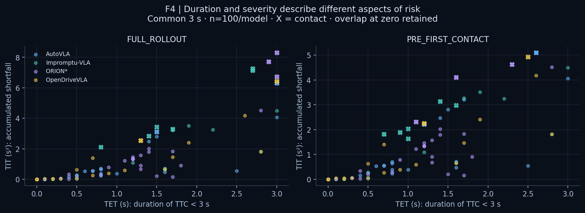
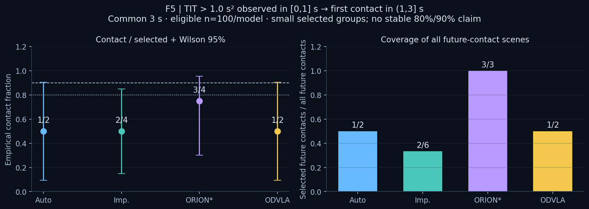
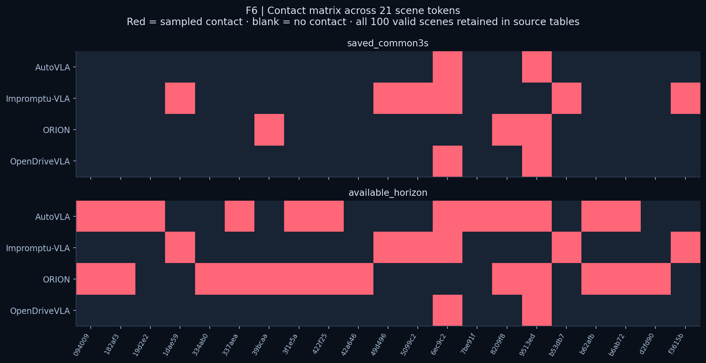

Average accuracy misses rare failures.
The proposal motivates long-tail evaluation beyond trajectory error and a single aggregate score. This page reports the existing Dev100 evidence; it does not establish population-level long-tail performance.
Study how vision–language–action driving models behave before a crash, then test whether early risk signals identify later contact without rewarding a lack of progress.
The proposal motivates long-tail evaluation beyond trajectory error and a single aggregate score. This page reports the existing Dev100 evidence; it does not establish population-level long-tail performance.
A common trajectory interface connects saved model plans to official execution. Sampled OBB contact, TTC, TIT, DRAC, PET and TET describe complementary outcomes. Progress and comfort provide context.
Observe a fixed prefix, exclude scenes already in contact, then label first contact in a future interval. Report selected scenes, contact counts, coverage and uncertainty together.
Research framing: supplied Drive2Survive NAIRR proposal, research sections. Current numerical evidence: saved four-model result files and metric manifests. Proposed baselines and broader scenario studies remain future work.
First sampled OBB contact. [2,3] includes 3 s; (3,4] includes 4 s. Unobserved time is not zero contact.
AutoVLA and ORION have separate executions of the same prediction at 3 s and 4 s. Their ego prefixes differ in all 100 scenes. A total-count difference therefore cannot be called “new collisions in the last second.”
In the 4 s runs, AutoVLA first contacts: 3 at ≤3 s / 9 at >3 s. ORION: 3 at ≤3 s / 10 at >3 s.
Same-prediction execution comparisonStatic overviews use all cohort scenes. The interactive plots above also support contact / no-contact groups and all fixed-landmark windows.
TET = Σ Δt · 1[0 ≤ TTC(t) < 3 s]
Right endpoint integration over original 0.1 s samples; t0 adds no duration. A known TTC beyond the 3 s search horizon contributes no exposure. Missing TTC remains unknown.
TIT = Σ Δt · max(0, 3 − TTC(t)) weights the same exposure by the remaining time shortfall. TET has units s; TIT has units s².
Full-rollout exposure may include contact. Strict pre-contact values stop at the last sample before contact and are retrospective. A fixed prefix is the appropriate feature window for a forward-looking test.
Means over all 100 valid scenes; zeros are observed zero exposure. Small means may coexist with a dangerous tail. These means are descriptive, not a model safety ranking.
All TET time series (.csv.gz) · Full / pre-contact / landmark summaries
Empirical contact fraction (precision) = selected future contacts / selected scenes. All-target coverage includes future contacts whose feature is not applicable. Metric-eligible recall has a different denominator when features are unavailable. Wilson 95% intervals are descriptive and do not account for shared logs or threshold search.
No held-out calibration is claimed. Candidates below maximize the number selected among the original saved grid points that reach the requested empirical fraction. Small groups and same-bank selection can make apparent success fragile.
TTC-censored scenes enter only as a tied lowest-risk rank; their numeric TTC is never replaced by 3. Rank curves describe this sample, not a validated deployment threshold.

Common 3 s contact counts are 2 / 6 / 3 / 2. Available 4 / 3 / 4 / 3 s counts are 12 / 6 / 13 / 2. Keep both views; the second is not a fair horizon-controlled ranking.
TET measures duration and TIT adds severity. TTC has a censored tail. DRAC applies to aligned closing conflicts; PET is sparse and cannot provide a completed crossing measure at the fixed observation cutoff here.
For the shared early TIT rule, selected contacts / selected scenes are 1/2, 2/4, 3/4, 1/2. None reaches 80%. Some searched thresholds reach 80% or 90% using only 1–5 selected scenes; none has a Wilson lower bound at the target for this reference window.
The outcome is an actual sampled ego–actor OBB touch or overlap. Count each scene once. Native NC and composite scores answer different questions and are not substituted for this outcome.
On common 3 s, mean saved route progress is approximately 9.41 / 8.33 / 8.23 / 8.74 m. Interpret safety alongside progress and comfort in the original results; different windows must not be mixed.
Use a disjoint held-out bank with more contact events to assess thresholds. Then test whether a safety response improves contact outcomes while preserving progress and comfort. These are research directions, not results added in this update.

Three real recorded camera views play alongside each BEV, aligned by capture time (about 2 Hz; held between real exposures). They show the original logged drive, not the simulated model viewpoint or identical model inputs. Each model keeps its own saved actor world; BEV playback repeats the original 0.1 s states.